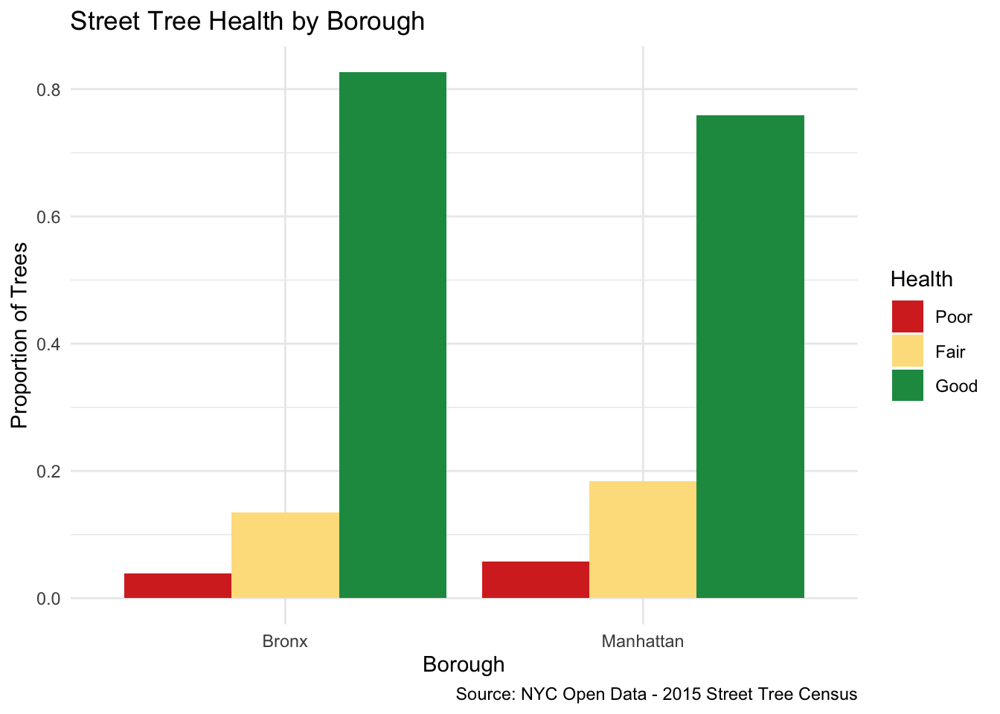
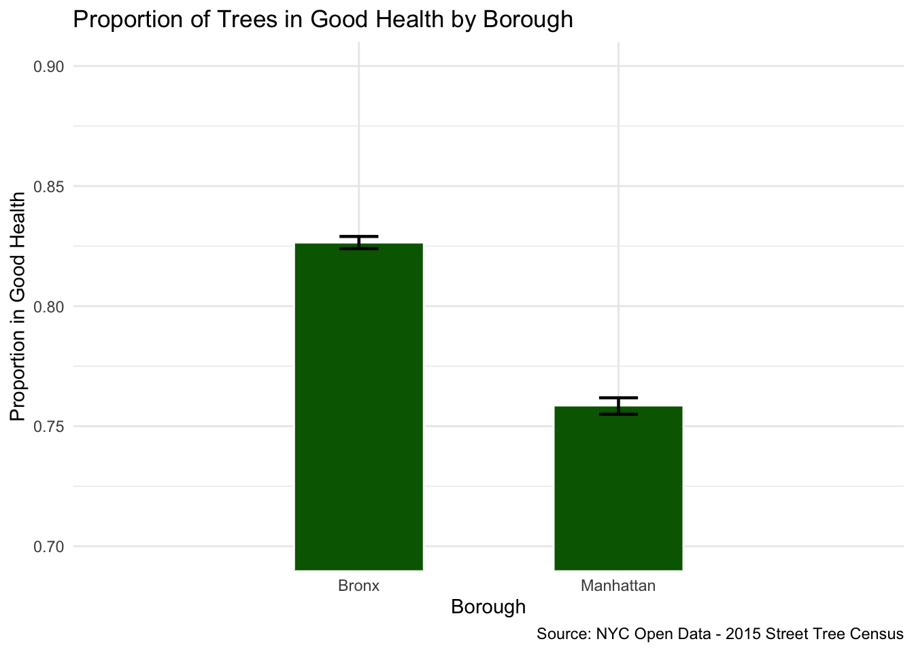
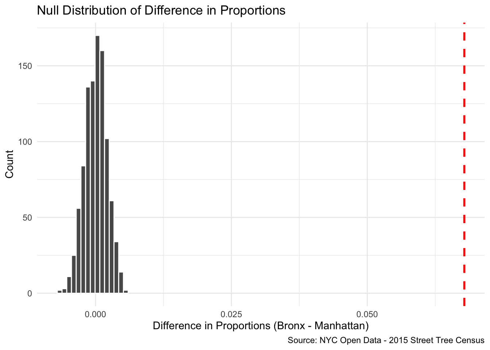

Environmental Justice in NYC: Down to the (Street) Tree.
Does Street Tree Health Differ by Borough in NYC?
For this analysis, in my continuing studies of urban sustainability, I wanted to understand environmental equity in NYC on a more granular basis than parks. This data comes from the 2015 Street Trees Census, is much larger (600,000+) than the previous one, and will likely be dwarfed once that 2025 census comes out. It includes a unique ID for each tree, both the common and scientific names, which block it is located, the diameter at breast heigh (DBH), and more. This dataset is available to the public here.
Variables
In this dataset, one row represents a tree. I completed a hypothesis test between two groups: health and borough. I aim to see if whether the proportion of trees in GOOD health differ between the richest borough, Manhattan, and the poorest, The Bronx.
| Variable | Type | Description |
|---|---|---|
HEALTH |
Categorical | Rated on a scale of GOOD, FAIR, or POOR |
BOROUGH |
Categorical | NYC borough where the park is located (1 = Manhattan, 2 = Bronx) |
Exploratory Comparison
To get a better glimpse of each borough’s urban canopy health, I first cleaned the data and then grouped it by BOROUGH and HEALTH. Upon further inspection, the boroughs had vastly different tree counts. Manhattan is home to 62,416 trees compared to Bronx’s 80,557. To better compare the two, I mutated the data into a proportionally comparison so that they are on a 0-1 scale.
At first glance, the proportion of trees in different health categories appears similar, with the vast majority in both boroughs being labeled GOOD. However, a more exact measure from the summary data shows that Manhattan has a higher proportion of both FAIR and POOR trees—18.4% and 5.8%, respectively—compared to The Bronx at 13.5% and 3.8%. This surprising, given that Manhattan has more income and in theory, more funding to keep trees healthy.

| Borough | Observed Proportion | Lower CI | Upper CI |
|---|---|---|---|
| Bronx | 0.826 | 0.824 | 0.829 |
| Manhattan | 0.759 | 0.755 | 0.762 |
For this analysis, box plots were not used because HEALTH is a categorical, not continuous, variable. Instead, a grouped bar chart of proportions better reflects the health distributions across the two boroughs. Thus, there are not outliers in the traditional sense; yet, it is clear that The Bronx has a noticeably higher proportion of GOOD trees.
Bootstrapping
In order to get a better understanding of how different the two boroughs are, I constructed a bootstrap confidence interval (CI) for each. As seen in the graph, the 95% CI does not overlap at all, and indeed, there is a difference of trees in GOOD health. Specifically, the CI for The Bronx is between 82.4% and 82.9%, with Manhattan’s at 75.5% and 76.2%. The difference between the lower bound of The Bronx and the upper bound of Manhattan is just over 6 percentage points. This provides strong visual and statistical evidence that the difference in tree health is not attributable to random chance.
Note: The graph is zoomed for comparison purposes.
Hypotheses
For my statistical analysis, Group 1 is The Bronx and Group 2 is Manhattan. The null hypothesis—what I am looking to disprove—states that the proportion of trees in GOOD health will be the same across both groups, ad any observed difference is due to random chance. Alternatively, the proportion of street trees in GOOD health does in fact differ between The Bronx and Manhattan. While I initially expected that Manhattan would have a higher proportion of healthier trees, the exploratory analysis revealed the opposite. To see the significance of this relation, I will use a one-side alternative hypothesis.
| Hypothesis | Notation | |
|---|---|---|
| H₀ | The proportion of trees in GOOD health is the same in The Bronx and Manhattan | p₁ − p₂ = 0 |
| Hₐ | The proportion of trees in GOOD health is greater in The Bronx than Manhattan | p₁ − p₂ > 0 |

Visualization of Statistical Significance
This graph illustrates that the null distribution is centered at 0, reflecting the assumption under the null hypothesis that there was no relation. The observed difference of 0.068, or 6.8 percentage points, is very far from the range of the null hypothesis. The shaded area is invisible with a p value of nearly 0, demonstrating that none of the 1000 permuted differences were as extreme as what we observed.
Results
I chose a significance level of α = 0.05, which is the conventional standard in social science. Practically, this means I require the probability of observing a difference as large as 6.8 percentage points by random chance alone to be less than 5% before rejecting the null hypothesis. Using this threshold, the p-value of less than 0.001 falls far below the threshold (0.05) required to fail to reject the null hypothesis, so I soundly reject it. This means that trees are definitively in better health in The Bronx than those in Manhattan, challenging the assumption that wealth corresponds to healthier streetscapes.
Discussion and Conclusion
The observed 6.8 percentage point difference, while being statistically significant, may not be as damning in the real world. The importance of this difference depends on context. The Bronx is home to almost 20,000 more trees than Manhattan, and is much less of a concrete jungle. Correspondingly, The Bronx has wider blocks and wider tree beds with more soil space, which leads to better tree health regardless of investment levels. On the other hand, Manhattan’s lower proportion of GOOD trees may reflect the stress than wide sidewalks, heavy foot traffic, and air pollution have on the borough’s trees.
This analysis set to find out whether street trees in The Bronx and Manhattan differ in health. Similar to the previous post, this was motivated by broader questions about green infrastructure equity in NYC and my passion for the topic. Using statistics and R, the answer was surprisingly clear—not in the extent to which they were different, but the direction. I found that The Bronx has a significantly larger proportion of trees in good health than Manhattan.
The bootstrap CI intervals from the beginning of the analysis fully agree with this conclusion, as they do not overlap at all. Further, the p-value of nearly 0, combined with the above difference, leads me to confidently reject the null hypothesis. That said, the context of both borough’s built environment, like land use patterns and tree species composition, is a factor that needs to be studied in future research.